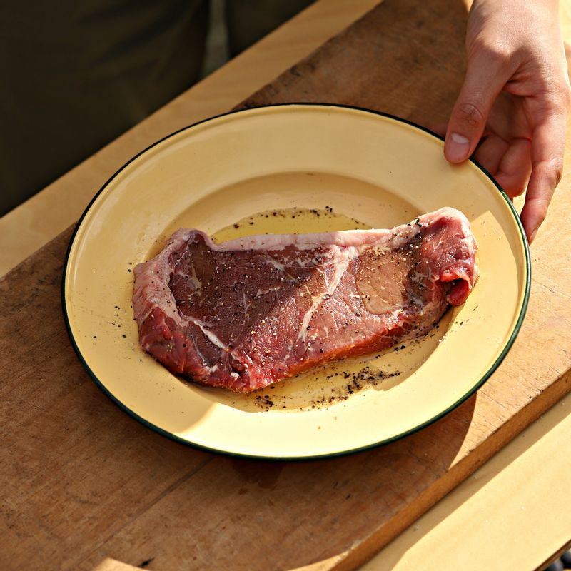
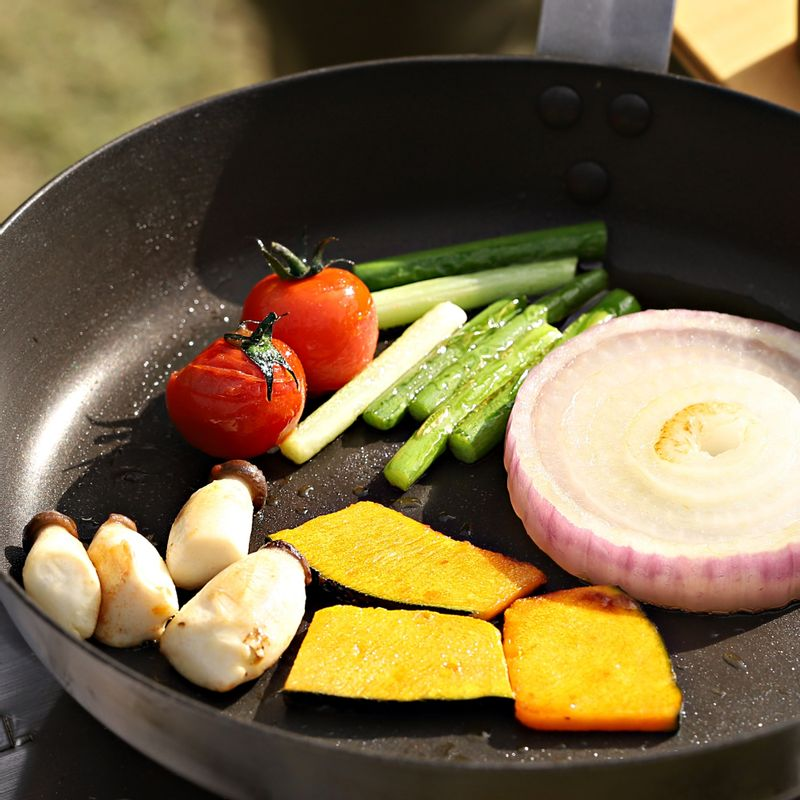
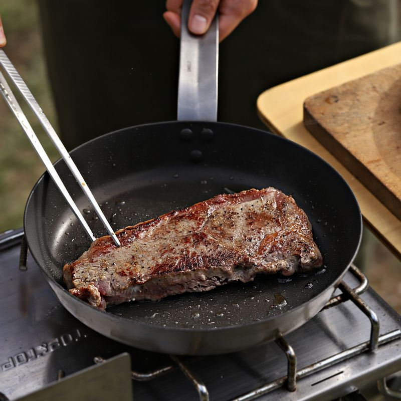
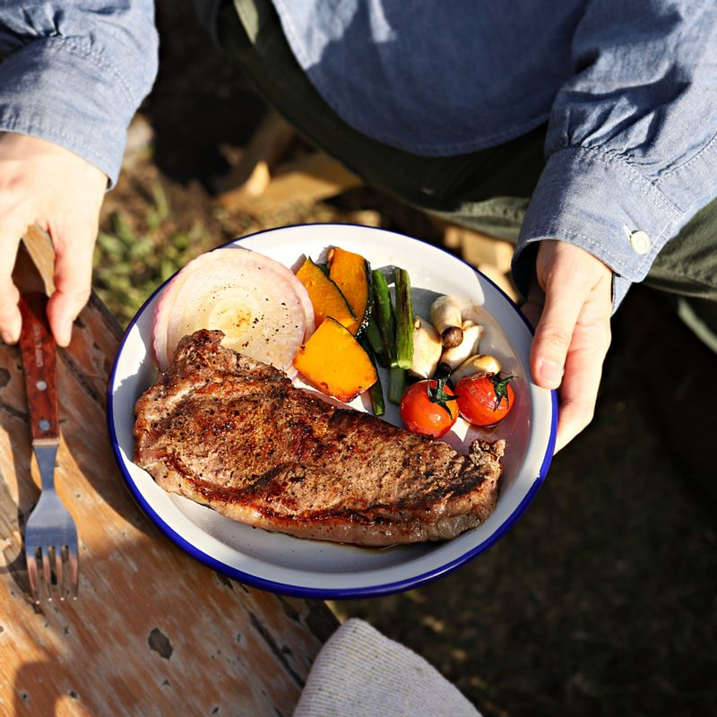

 쇠고기는 키친타올에 올려 핏물을 제거하고, 올리브유와 소금, 후춧가루를 뿌려 5분 정도 재워주세요.

적양파는 껍질을 벗긴 후 2센치 두께의 링으로 큼지막하게 썰고, 마늘쫑은 6센치 길이로 썰어주세요.
단호박은 한 입크기로 썰어주세요. 볼에 소스 재료를 넣어 섞어주세요.
 달군 팬에 버터를 두르고 고기를 넣어 겉면을 익히다가 손질한 야채를 넣고 1분 정도 볶은 후 소금, 후춧가루로 간을 해주세요.
 접시에 채끝살 스테이크를 담고 소스를 곁들여 완성해주세요.